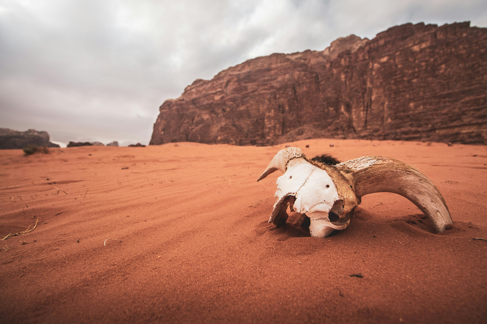
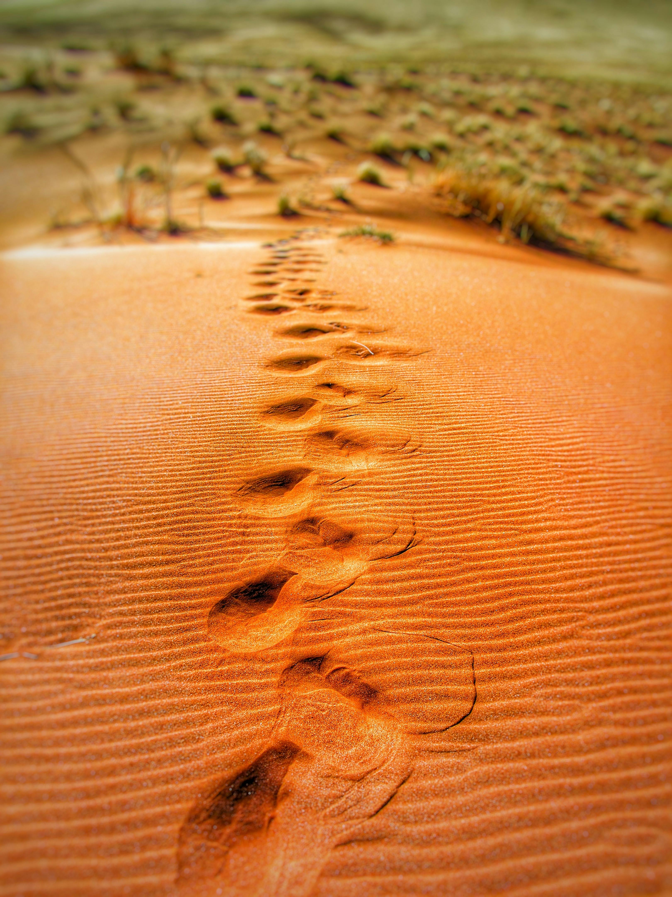

Comprehending Desertification: Origins, Effects, and Remedies*
Desertification, often referred to as the "creeping desert," is a global danger to economies, citizens, and ecosystems. It's the process that causes farmland turned into desert in dry sub-humid, semi-arid, and arid regions all over the world. This article covers the causes, effects, and possible remedies of desertification, highlighting its complexity.
Desertification Definition
A complicated phenomenon, desertification is triggered via natural and man-made forces. Desertification is primarily driven by climate change, which modifies ecosystems and contributes to soil degradation with increased temperatures and changed patterns of precipitation. Prolonged droughts speed up the processes of desertification by worsening land degradation, lack of water, and vegetation loss. These outcomes are accelerated by climate change.Desertification is additionally mainly driven by our actions. Unsustainable methods of farming diminish soil nutrients, worsen soil erosion, and diminish plant cover, all of which enhance the vulnerability of land to degradation. Examples of these practices include over irrigation, monoculture farming, and inadequate soil management. In pastoral settings, overgrazing exacerbates desertification, lowers plant diversity, and raises soil compaction. It can be made worse by refers to with ownership of land and population pressure.

The effects of desertification
Desertification has tons serious effects. Desertification harms the survival of species of vegetation and animals and interrupts ecosystems by triggering habitat damage, biodiversity loss, soil erosion, and decreased water availability. The procedure of turning arable land to a desert also lowers crop yields and land productivity, threatening food security as well as rendering poverty worse in the regions that are affected. On a social level as people struggle to cope with fewer resources and poor living circumstances, degradation destroys livelihoods, exacerbates poverty, and pushes migration. Desertification can cause the abandonment of land, the loss of traditional knowledge, and social unrest in semi-arid and arid terrain where agriculture and pastoral farming are the main sources of livelihood. These events intensify vulnerability and marginalization in these specific fields. Desertification exerts a significant financial strain on the nations and areas it affects. Lower crop production and the loss of cropland result in lower earnings, more dependence upon food assistance, & a greater susceptibility to hunger and economic storms. In addition to its adverse impact on agriculture, desertification has been tied with an increase in fees for healthcare, a loss of benefits to the environment, and an downward trend in tourism in the negatively affected regions.

Taking Desertification Seriously
The battle against desertification requires to be broad and multifaceted. Healing degraded lands, improving the fertility of the soil, and reducing desertification all depend heavily on environmentally friendly agricultural handling methods including agroforestry, soil conservation, water harvesting, and reforestation. The aforementioned techniques grant additional advantages incorporating carbon sequestration, conservation of biodiversity, and protecting watersheds, in addition to increasing land productivity and ecological robustness. To effectively mitigate the effects of desertification, local engagement is crucial. By recognizing customary traditions and knowledge, including local people in rehabilitation programs, and providing materials, instruction, and education, families may be empowered to oppose the development of deserts and adjust to changing circumstances in the environment. Other essential elements of grassroots desertification remedies include advancing equality among men and women, bolstering land tenure rights, and encouraging participative decision-making procedures. Local, national, and international policy actions are necessary to address desertification internationally. Enacting and upholding laws and rules that promote sustainable land use, conservation, and restoration is essential to mobilizing resources, coordinating attempts, and scale up worldwide efforts to battle desertification. It is also necessary to support international accords like the United Nations Convention to Combat Desertification (UNCCD).

Outcomes
Ecosystems, economics, and civilizations are all significantly impacted by the complex and pressing environmental issue of desertification. Understanding its causes, impacts, and potential solutions can help us battle to halt land degradation, restore ecosystems, and increase our resistance to climate change. If we cooperate and make a focused effort, we can ensure that future generations have a sustainable future.